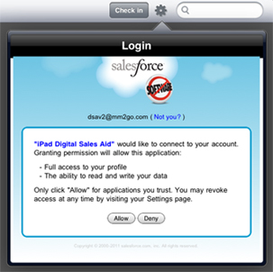

Step 1: Tap the Sign In Button
 |
After the Salesforce backend is configured, you can sign in to the application by tapping the Sign In button on the Home Screen. |
Step 2: Enter your Salesforce Credentials
Note: Make sure your Salesforce org is set up before you log in. If you are unsure, contact your administrator. Like Salesforce, the app leverages OAuth2 as part of the authentication process. Your login credentials will be identical. If you use Single Sign On (SSO) with Salesforce, you can use those credentials instead. |
Step 3: Enter the Verification Code
|  | Depending on your access configuration, You may get a screen requesting a verification code. Verification codes are sent by the system to your e-mail address registered with Salesforce.
After entering the code, you will see the screen on the left requesting access. Tap Allow, and the installation will proceed. |